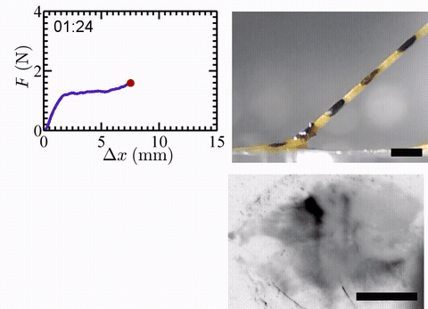
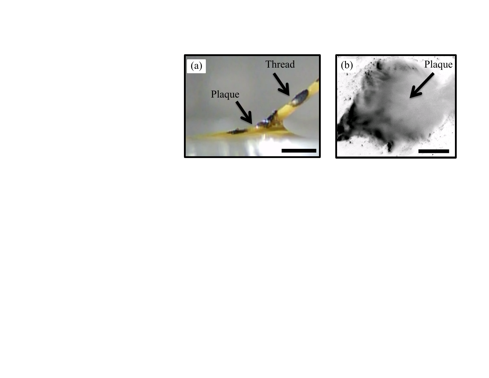
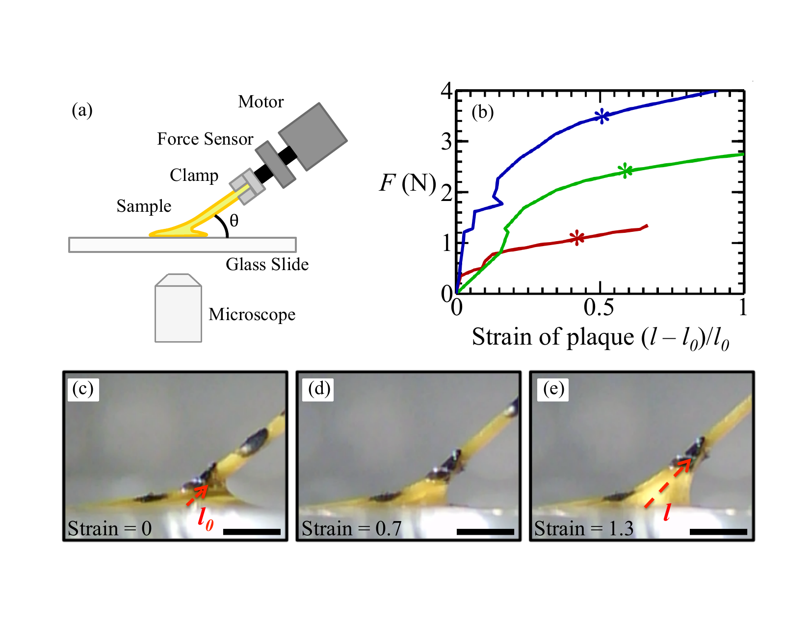
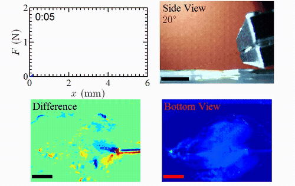
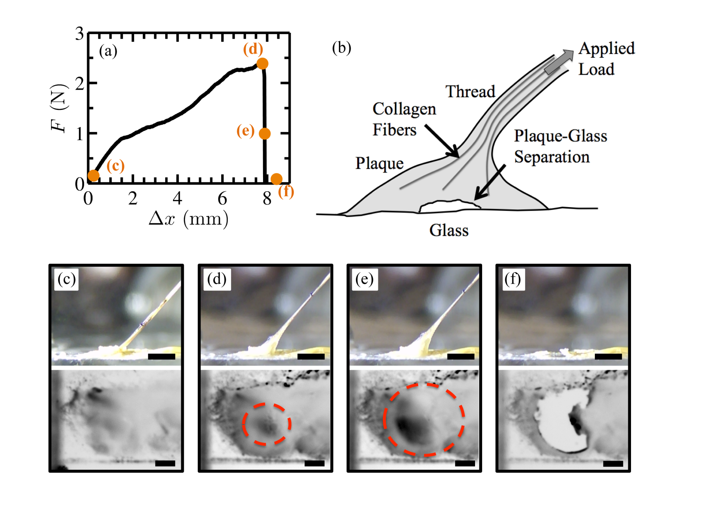
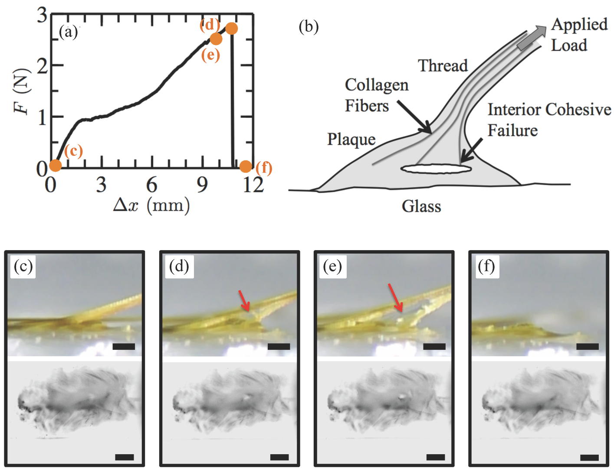

Mussels cling to rocks and piers in pounding surf, enduring hydrodynamic forces exceeding 10 N — yet their adhesive plaques hold fast. How? Most prior work attributed mussel adhesion to remarkable underwater chemistry: the catechol-rich proteins secreted by the plaque form covalent bonds with almost any wet surface. But chemistry alone cannot explain the full picture. This study shows that the geometry and mechanics of the plaque contribute a 100–1000-fold improvement in bond strength beyond what chemistry alone provides.

A single mussel thread-plaque holdfast being pulled to detachment. The byssal thread is gripped at the top and displaced at a constant rate. The plaque (attached to glass below) undergoes large deformations before the interface fails. Custom fiducial markers on the plaque surface track strain.
Each mussel deploys 25–100 byssal threads, each terminating in an adhesive plaque roughly 1 mm in diameter. The thread meets the plaque near its center at a shallow angle (5°–45°), producing a mushroom-shaped geometry — a design convergently evolved across many organisms that require strong, long-lasting attachment. The plaque is not simply a sticky pad; it is a mechanical structure that shapes how loads are distributed to the interface.


As the plaque is stretched, force rises steeply until a critical strain of ~20%, at which point yielding begins. Rather than failing at this point, the plaque continues to deform plastically, dissipating strain energy that would otherwise drive crack propagation at the interface. In every sample tested, yielding preceded debonding — suggesting that the plaque material is tuned to yield before the interface fails. This one mechanism alone accounts for two orders of magnitude enhancement in bond strength compared to a rigid adhesive of the same contact area.
To capture the full sequence of detachment, we simultaneously imaged the plaque from the side (to track bulk deformation and strain) and from below through the glass (to watch the debonding front propagate at the plaque–glass interface). The two views, synchronized to the force trace, reveal that debonding initiates at a characteristic location — determined by the local stress concentration — and then propagates progressively rather than catastrophically.

Synchronized dual-camera movie: side view (top) tracks plaque bulk deformation; bottom-up view (bottom) shows the debonding front propagating at the plaque–glass interface. Force is measured continuously throughout.


The combined contribution of holdfast shape and plastic yielding provides a 100–1000× improvement over flat adhesive patches of the same chemistry. These results suggest that engineering improved underwater adhesives requires optimizing contact geometry and material compliance alongside molecular chemistry — a principle that appears across many biological attachment systems, from gecko toe pads to barnacle cements. The custom load frame developed for this study allows pull angle, pull rate, and sample geometry to be systematically varied, enabling a comprehensive map of how each design parameter affects adhesive performance.
🔗 Link to publication ↗